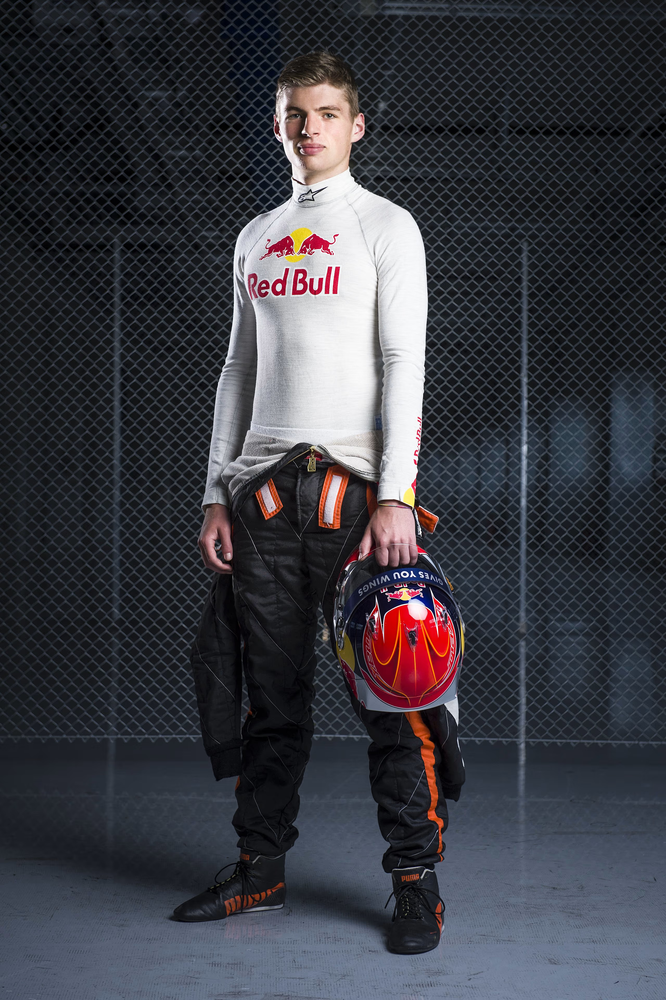

YOUNG MAXcareer-young.jpg
Born Into Speed
Max Emilian Verstappen was born on 30 September 1997 in Hasselt, Belgium, into a family where motorsport wasn't a hobby — it was oxygen. His father, Jos Verstappen, was a Formula One driver who competed in 106 Grands Prix. His mother, Sophie Kumpen, was a decorated champion kart racer. Racing wasn't something Max chose. It was inevitable.
By the age of two, Max was on a quad bike. At four, he was karting. At seven, he won his first race. By 15, he held three simultaneous international karting titles — two European championships and a World championship — something never done before in the history of karting.
The path from go-kart prodigy to Formula One legend wasn't just fast. It was historically unprecedented at every single step.